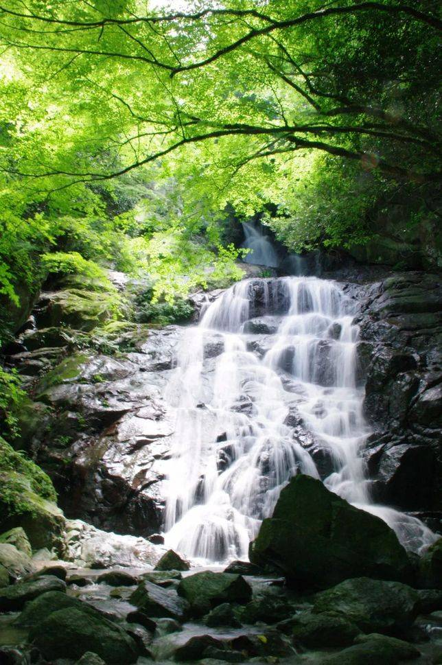
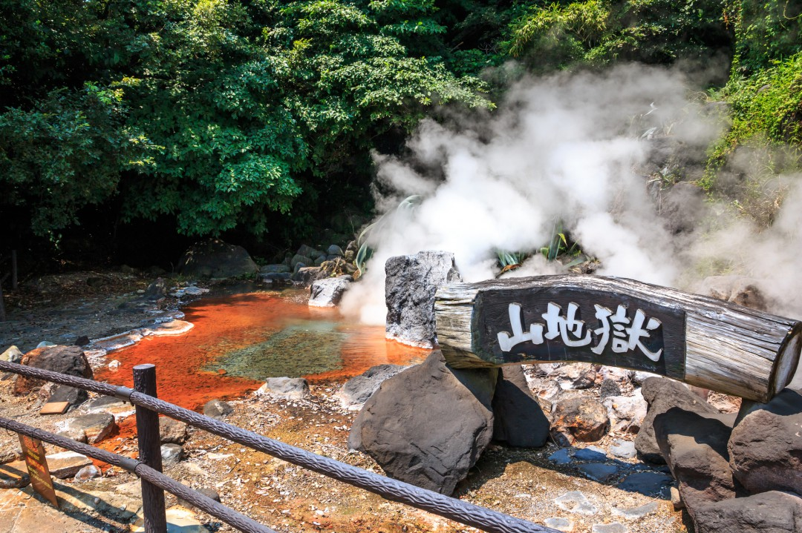
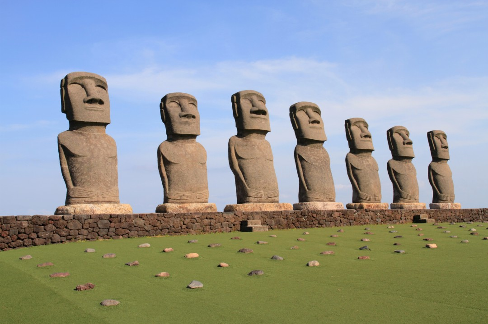
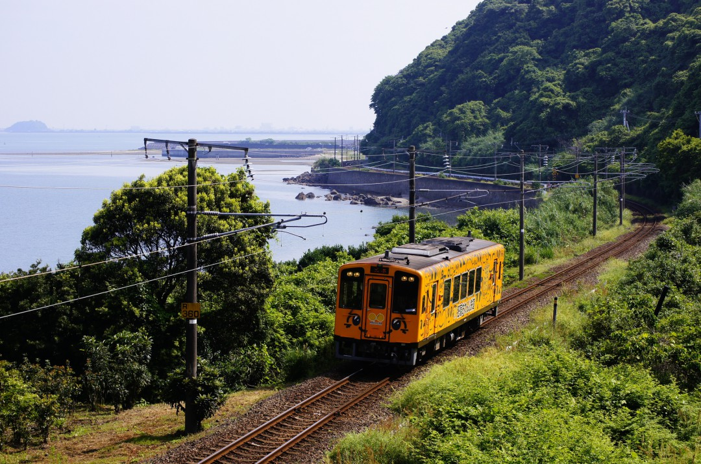

欣賞美景


夕陽在參拜道路直直延伸出去的延長線上西下，被稱為『光之道』的光景，是一年只能看見兩次的特別風景。
 
九州位於日本列島的西南部，是比較溫暖的區域。但是，南部和北部的氣候也有顯著的差異。
南部在九州當中氣候比較溫暖。只不過也是九州當中常常受到颱風侵襲的地帶，6月到10月為止需要多留意。
北部受到季風及潮流等影響，夏天的特徵是多雨且氣溫容易上升。此外，北部也有大分與熊本盆地，因此在溫差大的冬末也會有非常寒冷的時候。
九州是日本第三大島。在設立縣之前，是由九個國組成，因此至今也保留九州這個名字。現在則是變成福岡縣、佐賀縣、長崎縣、熊本縣、大分縣、宮崎縣、鹿兒島縣等七個縣。
高千穗峽是因為過去阿蘇山火山活動噴出的火山碎屑流冷卻凝固後，斷崖再經侵蝕而形成的峽谷。附近有被選為日本瀑布百選的『真名井瀑布』，瀑布從約17m的高度落下至水面，是象徵高千穗峽的風景。
check out!